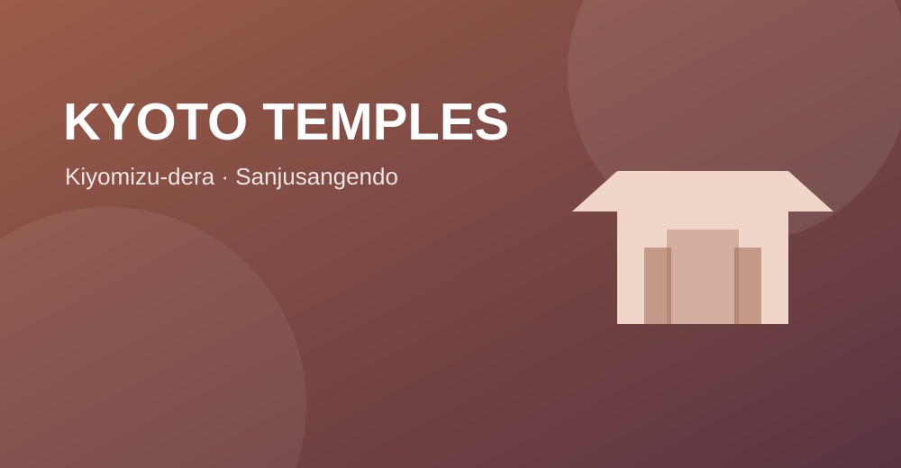
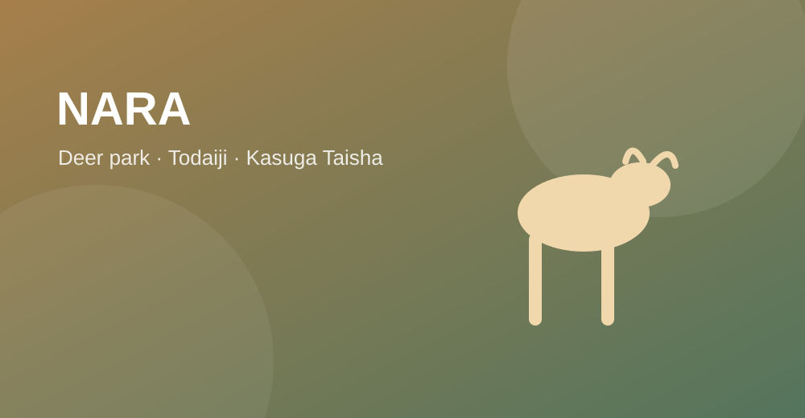

DAY 1
桃園 → 關西 → 京都
DAY 2
古都經典散策11月3日｜清水寺、和服與祇園
DAY 3
小鹿與千手觀音11月4日｜奈良與三十三間堂
DAY 4
新幹線移動日11月5日｜京都前往東京

奈良餵鹿提醒
鹿仙貝請分次餵食，餵完可攤開雙手示意沒有食物。不要將紙袋、塑膠袋或其他食物餵給鹿。
長輩行走時建議避開鹿群密集處，並保留巴士或計程車作為彈性方案。
2026.11.02 — 11.05
清水寺、和服散策、錦市場、奈良小鹿、三十三間堂與祇園夜景。


鹿仙貝請分次餵食，餵完可攤開雙手示意沒有食物。不要將紙袋、塑膠袋或其他食物餵給鹿。
長輩行走時建議避開鹿群密集處，並保留巴士或計程車作為彈性方案。